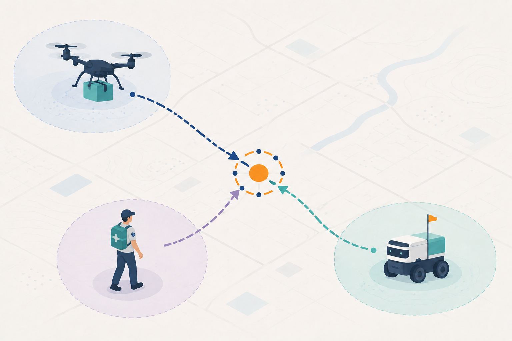
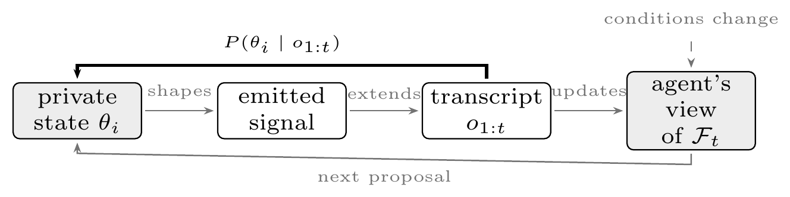
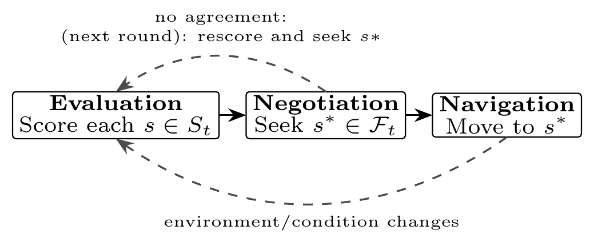
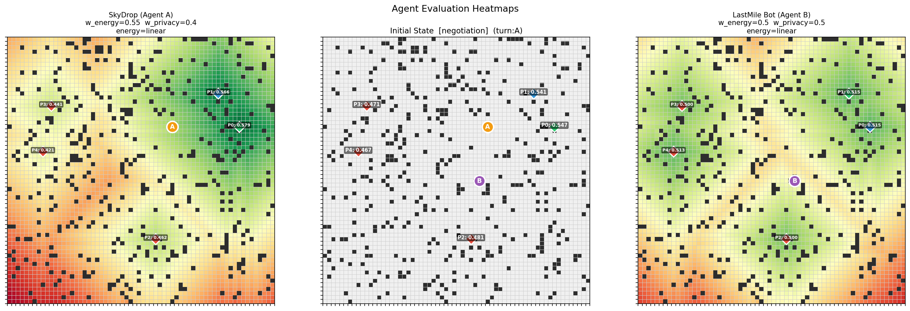

1
Evaluation
Each agent privately scores the candidate locations using its own private state, without revealing that state or the resulting scores.
A delivery drone handing a parcel to a ground courier, a taxi picking up a passenger, a rescue helicopter meeting a medic: each pair has different capabilities and constraints they cannot or will not share. SPACER studies how such heterogeneous agents can agree on a shared spatial outcome - a meeting point, a pickup location, or a handoff site - without a central coordinator and without revealing the private information behind their preferences, even as the situation keeps changing around them.

Where should a delivery drone hand off a parcel to a courier when its battery is low and every extra mile jeopardizes a safe return? Where should an autonomous taxi pick up a passenger who does not want to share their precise location? Where should a rescue helicopter and a medic agree to meet when terrain, fuel constraints, and operational security each favor a different location?
These are instances of one recurring challenge: two or more autonomous agents, human or artificial, with interdependent goals and undisclosed preferences, must settle on a shared spatial outcome without a trusted central authority. Existing work addresses parts of this: spatial planning coordinates agents in physical environments, location-privacy research protects sensitive spatial data, and decentralized negotiation studies agreement between agents with private preferences. SPACER asks what happens when all three concerns arise together: a spatial outcome must be agreed upon, the information behind each agent's preferences must stay private, and the feasible outcomes can change while coordination is still underway.
A proposal or a rejection is not just a negotiation move; it can also be evidence about an agent's location, range, or a site it needs to protect. Even the agreed outcome carries information: agreeing on a place says something about where an agent can be, in a way that agreeing on a calendar slot usually does not. The same signals agents exchange to find a mutually acceptable outcome can sharpen an observer's belief about each agent's private state, while the set of acceptable outcomes keeps drifting as conditions change.

SPACER instantiates the general problem as privacy-preserving meeting-point selection, organized as a three-phase cycle:
Each agent privately scores the candidate locations using its own private state, without revealing that state or the resulting scores.
Agents exchange only candidate indices, proposals, acceptances, and refusals, seeking an outcome every agent prefers over disagreement, with no central broker and no access to one another's utilities.
Once an outcome is agreed, the agents act on it and move toward the shared location.

This is a cycle, not a one-shot pipeline: if no agreement is reached, agents rescore and try again. If conditions change—before agreement, after agreement but before arrival, or even mid-walk—the cycle re-enters from evaluation. An agreed meeting point can stop being reachable or acceptable while agents are still en route, so evaluation, negotiation, and navigation may each run more than once during a single mission.
For the evaluation phase—how an agent turns its private state into a score for each candidate location—we currently use a fixed formula rather than a learned one. Each agent blends a travel-cost score with a privacy score based on the geo-indistinguishability notion of privacy, with protection growing according to distance from its starting location. The two scores are combined using a weighted-sum approach based on the agent's own balance between cost and privacy.

Agreeing on a candidate without a central broker seeing either agent's utilities is a private distributed constraint optimization (DCOP) problem. Existing methods such as SSDPOP and P-SyncBB currently serve as our baselines, although they target the static case rather than SPACER's spatial and repeated setting. For the negotiation and navigation phases, we are exploring agents that learn their behavior through reinforcement learning instead of following a fixed, hand-written protocol, with the goal of negotiating and navigating while keeping each agent's private information undisclosed.
SPACER's formulation leaves three central questions open, and they are coupled: communication helps agents find an outcome everyone can accept, but it also takes time and can reveal the private information that made that outcome acceptable in the first place.
Once more than one mutually acceptable outcome exists, which one should be chosen, and by what rule—bargaining, fairness, efficiency, or a learned policy—when no agent can see the others' private utilities? This becomes harder as the number of agents and locations grows.
Candidate locations, utilities, and the value of disagreement can shift while agents move or resources are consumed. When should agents renegotiate, can a prior agreement warm-start the next round, and can negotiation, movement, and renegotiation be interleaved?
The signals that help agents agree can reveal private state over many rounds, even when no single message is decisive. This includes richer, LLM-based semantic negotiation and human operators who inspect proposals and become observers themselves.
These open questions follow directly from the scenarios that motivate SPACER. In each setting, outcome selection, coordination under change, and inference bounds must be addressed together for the framework to become deployable.
Delivery drones and couriers, taxis, and shared fleets each retain private information such as state, battery, route, or passenger location, yet still need to agree on where to meet.
Ground vehicles, helicopters, and medics converging on a handoff point must coordinate under partial map knowledge and intermittent communication. Here, the coupling of agreement, privacy, and change is even sharper because communication may be unreliable or discontinuous.